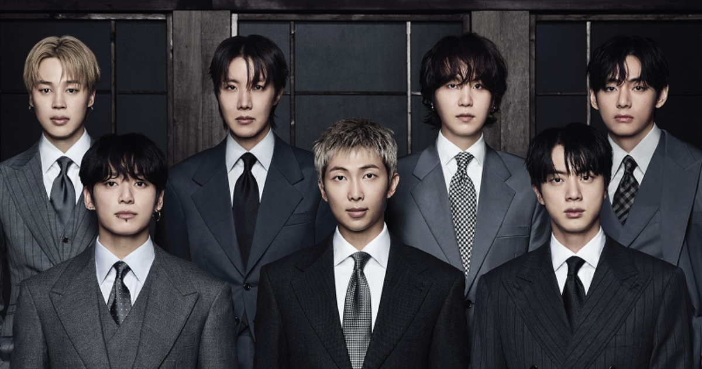

Beyond the Scene
BTS, también conocido como Bangtan Sonyeondan (방탄소년단), es un grupo surcoreano formado por siete integrantes: RM, Jin, SUGA, j-hope, Jimin, V y Jung Kook.
El grupo debutó en 2013 bajo BIGHIT MUSIC y con el paso de los años desarrolló una trayectoria internacional que lo convirtió en uno de los grupos de K-pop más reconocidos a nivel mundial.